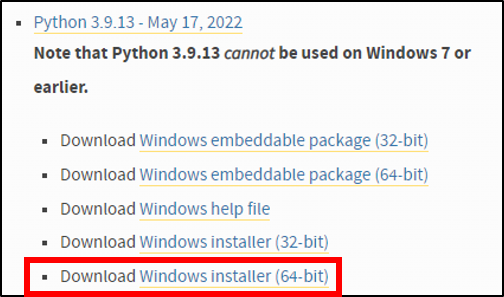
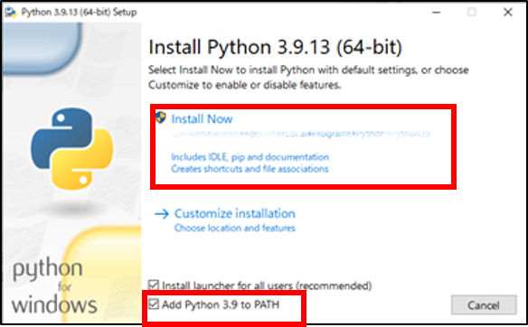
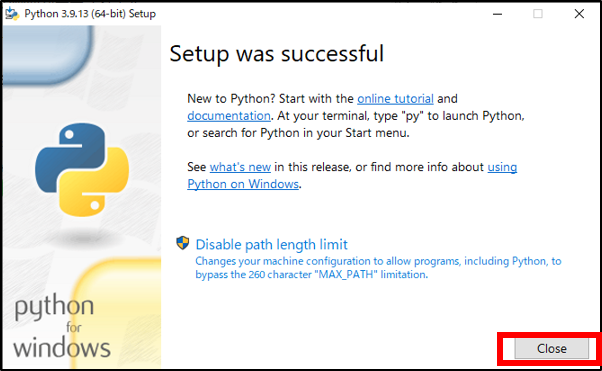
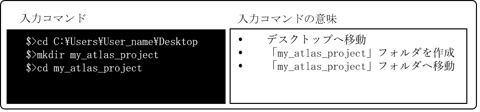
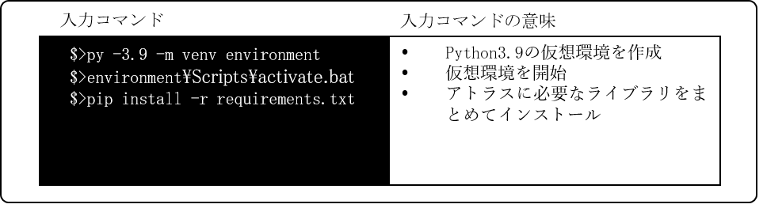

環境構築手順書
1 本書について
本書では、建物テクスチャアトラス化ツール（以下「本ツール」という。）の環境構築手順について記載しています。
2 環境構築
本ツールは、Windows環境での使用を想定しています。そのため、Windowsで動作する環境構築を説明します。
2-1 ベース環境の構築
再アトラス化ツールは、Python言語で記述しています。よって、ツールの環境構築前にベースとなる環境を構築します。手順を以下に示します。
2-1-1 公式サイトへアクセス
以下の公式サイトをブラウザで開きます。
https://www.python.org/downloads/windows/
2-1-2 インストーラーのダウンロード
「Python 3.9.x」という表示の下にある「Windows installer (64-bit)」をクリックすると、Pythonインストーラーのダウンロードが始まります。本ツールでは、Python3.9.13を使用します

2-1-3 インストーラーの実行
ダウンロードが完了後、インストーラーをダブルクリックで開きます。「Add-Python3.9 to Path」にチェックを入れ、「Install Now」をクリックします。

2-1-4 管理者権限の付与
インストールには管理者権限が必要なため、ユーザアカウント制御確認ダイアログが表示される場合があります。表示された場合は、「はい」をクリックします。
2-1-5 インストールの完了
以下画面が表示されると、環境構築は完了です。

次に、再アトラス化ツールに必要なライブラリをインストールします。
2-2 Windows PowerShellの起動
Windowsの検索ボックスで「Windows PowerShell」と入力を行い、ターミナルを開きます。ここでは、Windows PowerShellを使った方法を記載しますが、コマンドプロンプト等でも同様にして実行可能です。
2-2-1 実行環境場所の作成
ターミナル上で、実行環境のフォルダを作成します。

2-2-2 ライブラリ一括インストールファイルのコピー
「my_atlas_project」フォルダへ「requirements.txt」をコピーします。
2-2-3 ライブラリのインストール
Python3.9の仮想環境を作成して、システムに必要なライブラリをインストールします。

2-2-4 構築完了
「my_atlas_project」フォルダへ、アトラス化のソースコード一式(Atlas_Prot)と入力データをコピーして、実行環境の構築は完了です。
2-2-5 実行時間の目安
表に示すデータおよびPCを使用した場合の実行時間は約25分です。
| 項目 | 名称 | 内容 |
|---|---|---|
| 検証データ | 渋谷区データ | CityGML4ファイル、画像容量：500MB |
| PCスペック | プロセッサ | Intel Xeon W-2123 CPU@3.60GHz 3.60GHz |
| 実装RAM | 16.0GB | |
| OS | Windows10 Pro（21H2） |